Climate Change Indicators in the United States
The Earth's climate is changing. Temperatures are rising, snow and rainfall patterns are shifting, and more extreme climate events – like heavy rainstorms and record high temperatures – are already happening. Many of these observed changes are linked to the rising levels of carbon dioxide and other greenhouse gases in our atmosphere, caused by human activities.
EPA partners with more than 40 data contributors from various government agencies, academic institutions, and other organizations to compile a key set of indicators related to the causes and effects of climate change. The indicators are published in EPA's report, Climate Change Indicators in the United States, available on this website and in print. Explore the indicators below.
Explore Climate Change Indicators
Key Findings
-
Contents:
Introduction
Greenhouse Gases
- U.S. Greenhouse Gas Emissions
- Global Greenhouse Gas Emissions
- Atmospheric Concentrations of Greenhouse Gases
- Climate Forcing
Weather and Climate
Oceans
Snow and Ice
Health and Society
- Climate Change and Human Health
- Heat-Related Deaths
- Heat-Related Illnesses
- Heating and Cooling Degree Days
- Lyme Disease
- West Nile Virus
- Length of Growing Season
- Ragweed Pollen Season
Ecosystems
- Wildfires
- Streamflow
- Stream Temperature
- Great Lakes Water Levels and Temperatures
- Bird Wintering Ranges
- Marine Species Distribution
- Leaf and Bloom Dates
More Information
-
Introduction
The Earth’s climate is changing. Scientists are highly confident that many of the observed changes can be linked to the rising levels of carbon dioxide and other greenhouse gases in our atmosphere, which are caused by human activities. Current and future emissions will continue to increase the levels of these gases in our atmosphere for the foreseeable future.
One important way to track and communicate the causes and effects of climate change is through the use of indicators.
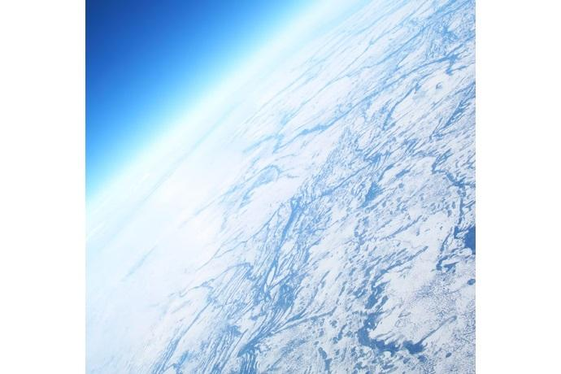 -
U.S. Greenhouse Gas Emissions
In the United States, greenhouse gas emissions caused by human activities increased by 7 percent from 1990 to 2014 though emissions have decreased since 2005. Carbon dioxide accounts for most of the nation’s emissions and most of the increase since 1990. Electricity generation is the largest source of U.S. greenhouse gas emissions, followed by transportation.
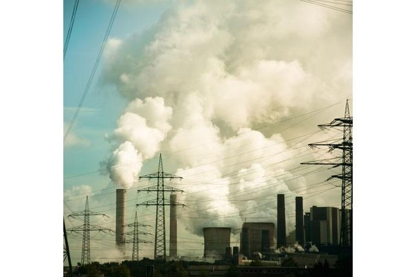 -
Global Greenhouse Gas Emissions
Worldwide, net emissions of greenhouse gases from human activities increased by 35 percent from 1990 to 2010. Emissions of carbon dioxide, which account for about three-fourths of total emissions, increased by 42 percent over this period.
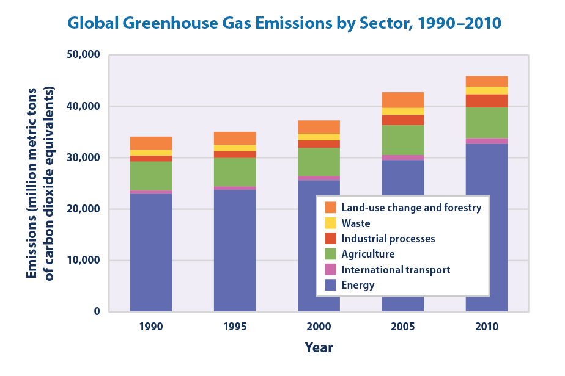Data sources: World Resources Institute, 2014; Food and Agriculture Organization, 2014
-
Atmospheric Concentrations of Greenhouse Gases
Historical measurements show that the current global atmospheric concentrations of carbon dioxide are unprecedented compared with the past 800,000 years. Concentrations of carbon dioxide and other greenhouse gases in the atmosphere have increased since the beginning of the industrial era. Almost all of this increase is attributable to human activities.
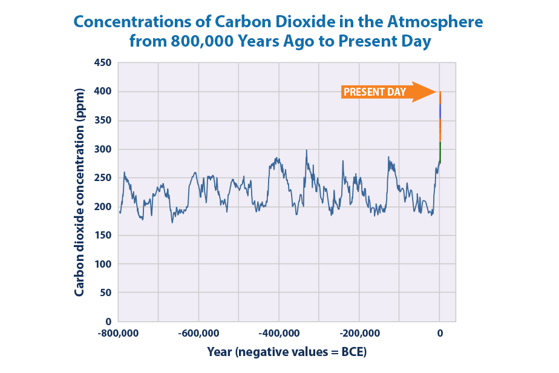Data source: Compilation of 10 underlying datasets
-
Climate Forcing
Climate forcing refers to a change in the Earth’s energy balance, leading to either a warming or cooling effect. An increase in the atmospheric concentrations of greenhouse gases produces a warming effect over time. From 1990 to 2015, the total warming effect from greenhouse gases added by humans to the Earth’s atmosphere increased by 37 percent. The warming effect associated with carbon dioxide alone increased by 30 percent.

-
Average Temperature
Average temperatures have risen across the contiguous 48 states since 1901, with an increased rate of warming over the past 30 years. Eight of the top 10 warmest years on record have occurred since 1998. Average global temperatures show a similar trend, and all of the top 10 warmest years on record worldwide have occurred since 1998. Within the United States, temperatures in parts of the North, the West, and Alaska have increased the most.
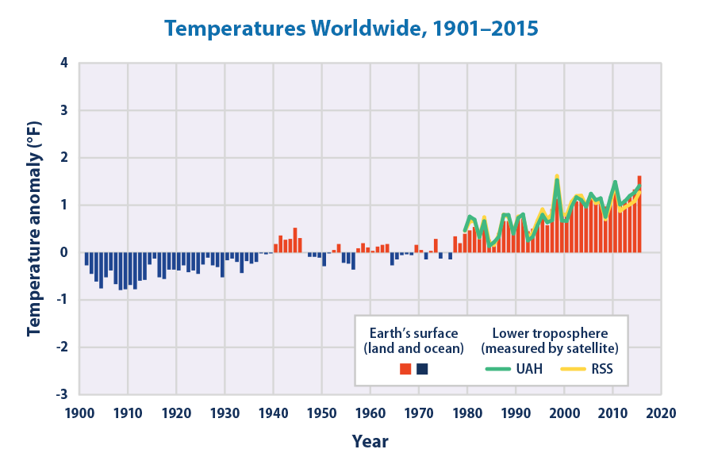Data source: NOAA, 2016
-
High and Low Temperatures
Many extreme temperature conditions are becoming more common. Since the 1970s, unusually hot summer temperatures have become more common in the United States while unusually cold winter temperatures have become less common—particularly very cold nights (lows).
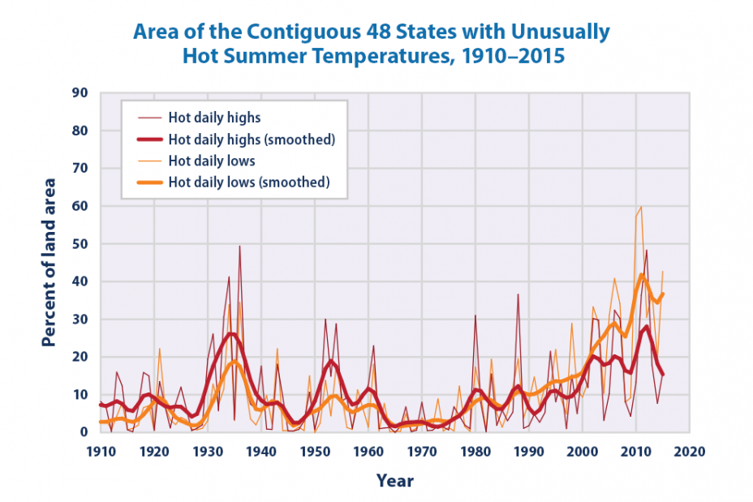Data source: NOAA, 2015
-
Total Precipitation
Total annual precipitation has increased over land areas in the United States and worldwide. Since 1901, precipitation has increased at an average rate of 0.17 inches per decade in the contiguous 48 states and 0.08 inches per decade worldwide. However, shifting weather patterns have caused certain areas, such as the American Southwest, to experience less precipitation than usual.
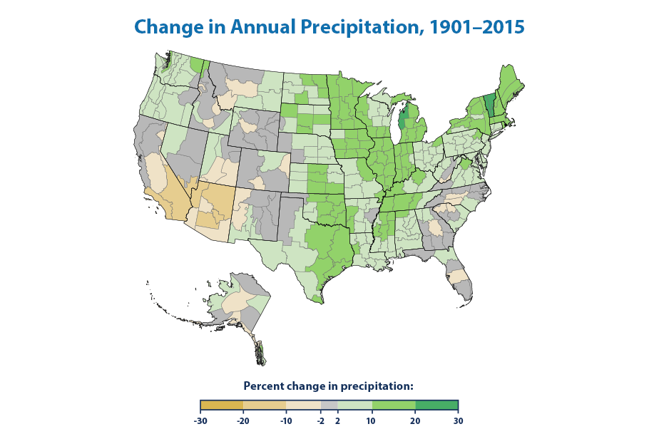Data source: NOAA, 2016
-
Heavy Precipitation
In recent years, a higher percentage of precipitation in the United States has come in the form of intense single-day events. Nationwide, nine of the top 10 years for extreme one-day precipitation events have occurred since 1990. The occurrence of abnormally high annual precipitation totals has also increased.
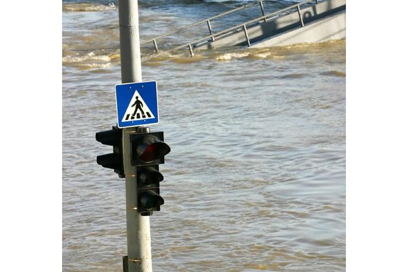 -
Tropical Cyclone Activity
Tropical storm activity in the Atlantic Ocean, the Caribbean, and the Gulf of Mexico has increased during the past 20 years. Storm intensity is closely related to variations in sea surface temperature in the tropical Atlantic. However, changes in observation methods over time make it difficult to know for sure whether a longer-term increase in storm activity has occurred.
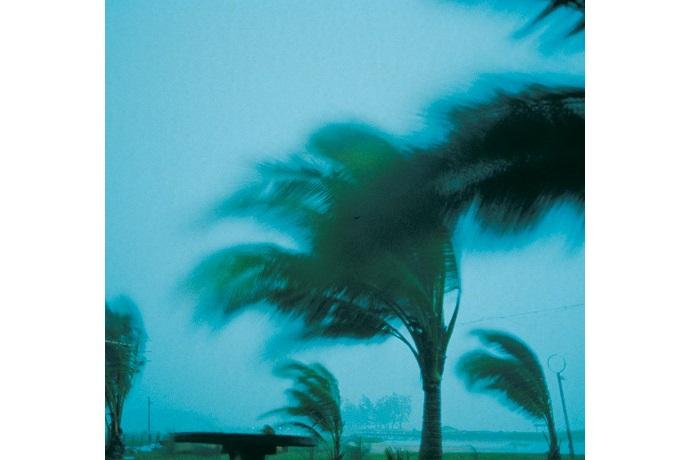 -
River Flooding
Changes in the frequency and magnitude of river flood events vary by region. Floods have generally become larger across parts of the Northeast and Midwest and smaller in the West, southern Appalachia, and northern Michigan. Large floods have become more frequent across the Northeast, Pacific Northwest, and parts of the northern Great Plains, and less frequent in the Southwest and the Rockies.
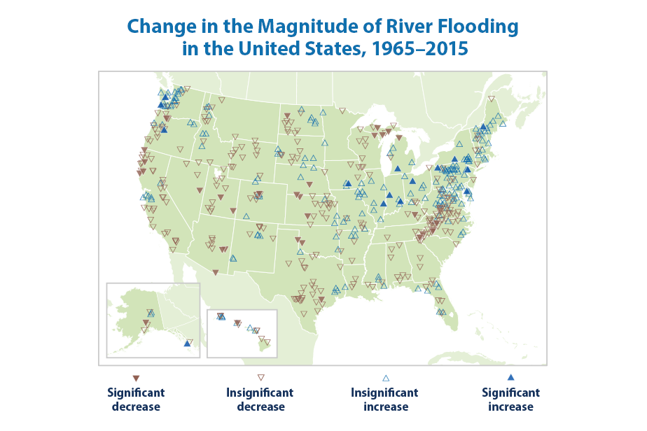Data source: Slater and Villarini, 2016
-
Drought
Average drought conditions across the nation have varied since records began in 1895. The 1930s and 1950s saw the most widespread droughts, while the last 50 years have generally been wetter than average. However, specific trends vary by region. A more focused analysis of drought in recent years shows that between 2000 and 2015, roughly 20 to 70 percent of the United States experienced drought at any given time.
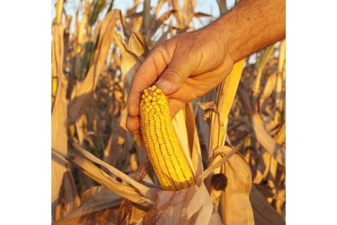 -
Ocean Heat
Three independent analyses show that the amount of heat stored in the ocean has increased substantially since the 1950s. Ocean heat content not only determines sea surface temperature, but also affects sea level and currents.
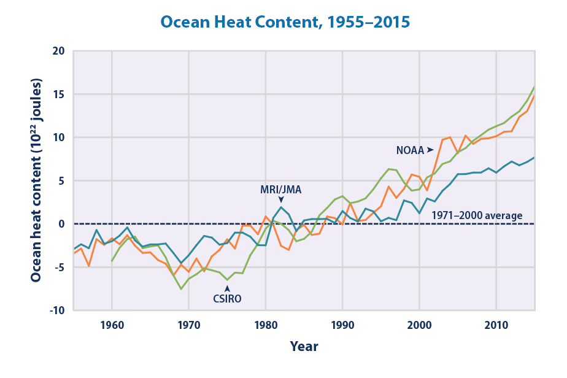Data sources: CSIRO, 2016; MRI/JMA, 2016; NOAA, 2016
-
Sea Surface Temperature
Ocean surface temperatures increased around the world during the 20th century. Even with some year-to-year variation, the overall increase is clear, and sea surface temperatures have been consistently higher during the past three decades than at any other time since reliable observations began in the late 1800s.
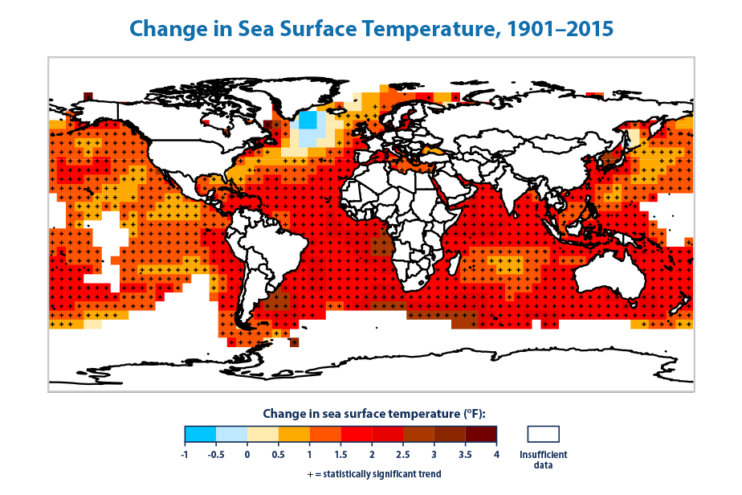Data sources: IPCC, 2013; NOAA, 2016
-
Sea Level
When averaged over all of the world’s oceans, sea level has risen at a rate of roughly six-tenths of an inch per decade since 1880. The rate of increase has accelerated in recent years to more than an inch per decade. Changes in sea level relative to the land vary by region. Along the U.S. coastline, sea level has risen the most along the Mid-Atlantic and Gulf coasts, in some places by more than 8 inches since 1960.
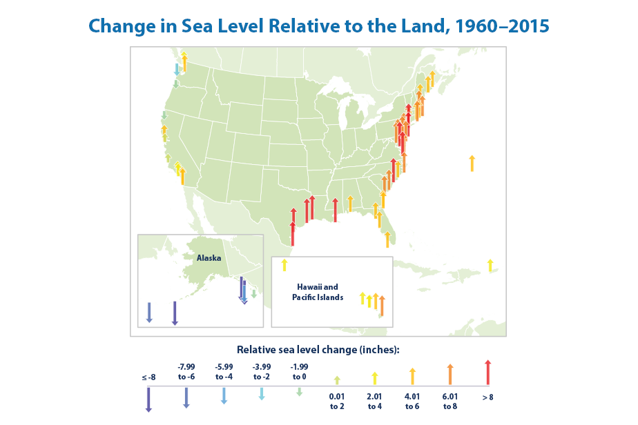Data source: NOAA, 2016
-
Coastal Flooding
Flooding is becoming more frequent along the U.S. coastline as sea level rises. Nearly every site examined has experienced an increase in coastal flooding since the 1950s. The rate is accelerating in many locations along the East and Gulf coasts. The Mid-Atlantic region suffers the highest number of coastal flood days and has also experienced the largest increase in frequency over time.
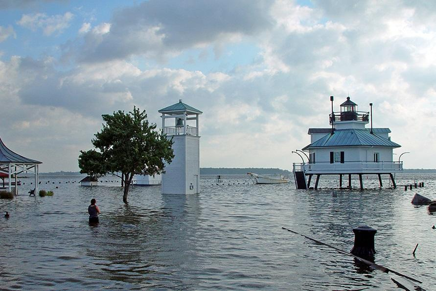Source: Chesapeake Bay Maritime Museum
-
Ocean Acidity
The ocean has become more acidic over the past few centuries because of increased levels of atmospheric carbon dioxide, which dissolves in the water. Higher acidity affects the balance of minerals in the water, which can make it more difficult for certain marine animals to build their protective skeletons or shells.
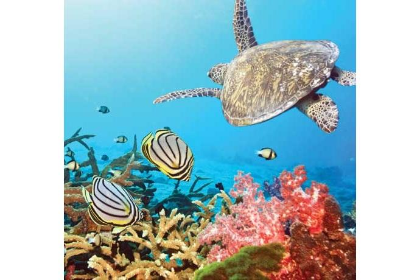 -
Arctic Sea Ice
Part of the Arctic Ocean is covered by ice year-round. The area covered by ice is typically smallest in September, after the summer melting season. The annual minimum extent of Arctic sea ice has decreased over time, and in September 2012 it was the smallest ever recorded. Arctic ice has also become thinner, which makes it more vulnerable to further melting. March sea ice extent reached a new low in 2015 and hit roughly the same low again in 2016—about 7 percent less than the 1981–2010 average.
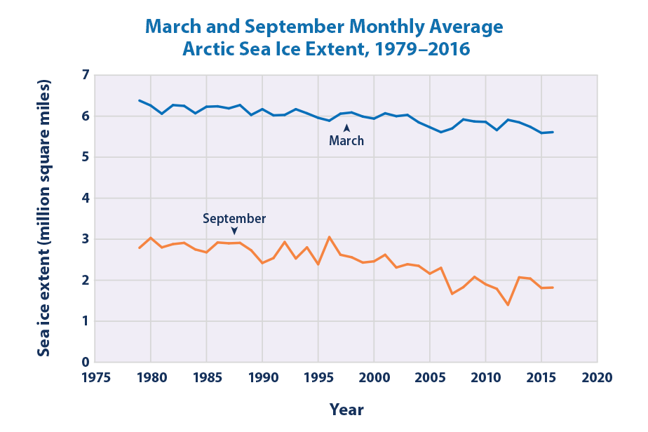Data source: NSIDC, 2016
-
Antarctic Sea Ice
Antarctic sea ice extent in September and February has increased somewhat over time. The September maximum extent reached the highest level on record in 2014—about 7 percent larger than the 1981–2010 average. Slight increases in Antarctic sea ice are outweighed by the loss of sea ice in the Arctic during the same time period.
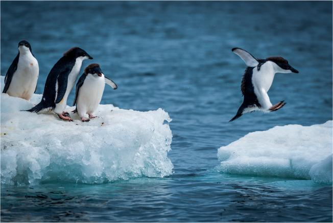 -
Glaciers
Glaciers in the United States and around the world have generally shrunk since the 1960s, and the rate at which glaciers are melting has accelerated over the last decade. The loss of ice from glaciers has contributed to the observed rise in sea level.
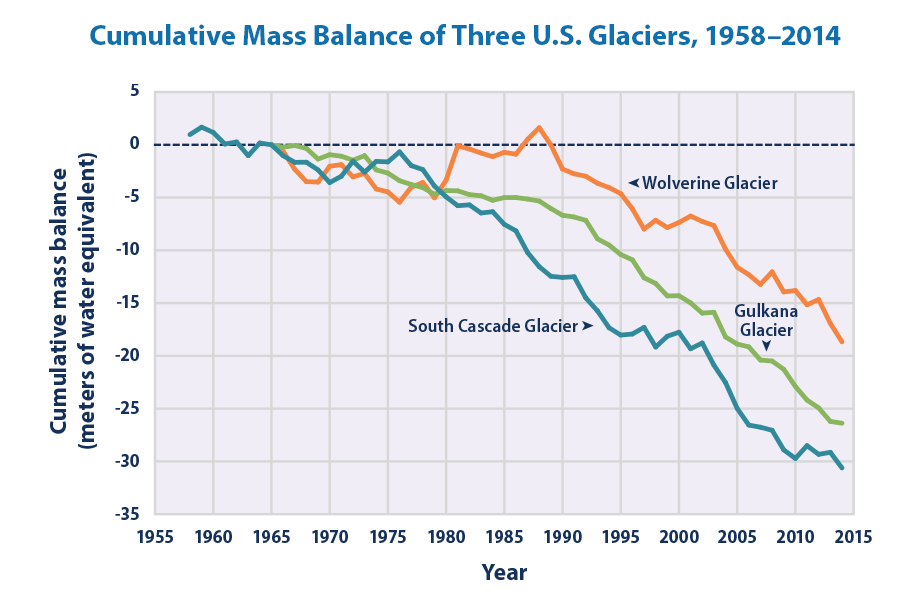Data sources: O’Neel et al., 2014; USGS, 2015
-
Lake Ice
Lakes in the northern United States are freezing later and thawing earlier compared with the 1800s and early 1900s. Freeze dates have shifted later at a rate of roughly half a day to one-and-a-half days per decade, while thaw dates for most of the lakes studied have shifted earlier at a rate of half a day to two days per decade.
-
Snowfall
Total snowfall—the amount of snow that falls in a particular location—has decreased in most parts of the country since widespread records began in 1930. One reason for this decline is that nearly 80 percent of the locations studied have seen a decrease in the proportion of precipitation falling as snow each winter.
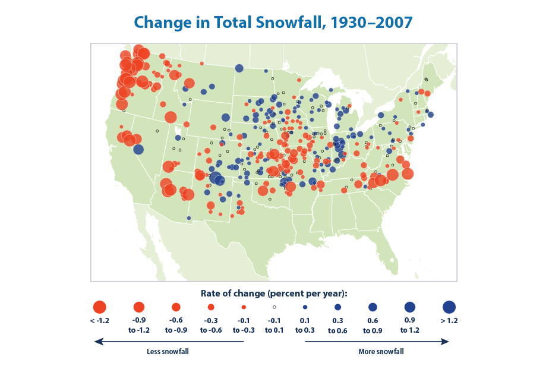Data source: Kunkel et al., 2009
-
Snow Cover
The average portion of North America covered by snow has decreased at a rate of about 3,300 square miles per year since 1972, based on weekly measurements taken throughout the year. There has been much year-to-year variability, however. In the United States, the snow cover season has become shorter by nearly two weeks on average since 1972. By far the largest change has taken place in the spring, with the last day of snow shifting earlier by 19 days.
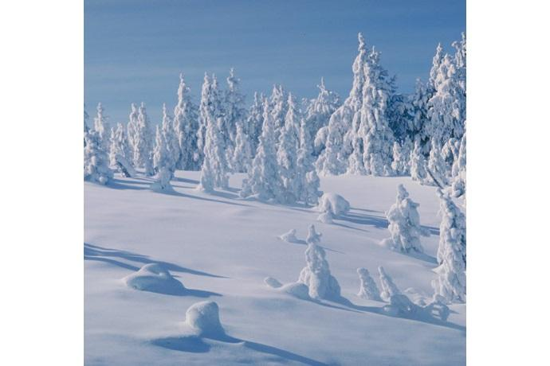 -
Snowpack
The depth or thickness of snow on the ground (snowpack) in early spring decreased at more than 90 percent of measurement sites in the western United States between 1955 and 2016. Across all sites, snowpack depth declined by an average of 23 percent over the last 50 years.
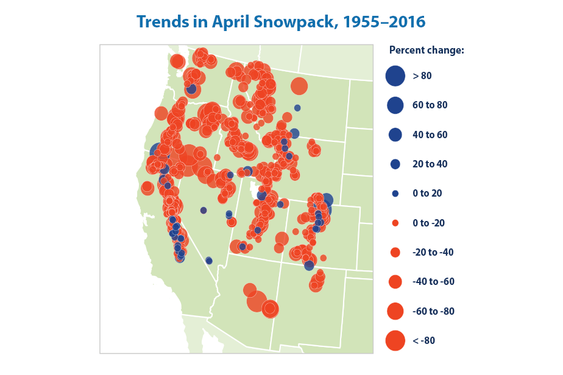Data source: Mote and Sharp, 2016
-
Climate Change and Human Health
Climate change poses many threats to the health and well-being of Americans. Some of these health impacts are already happening in the United States. This section of the report helps to illustrate how climate change can affect human health, and demonstrates how EPA’s climate change indicators advance the dialogue in connecting climate change and human health.
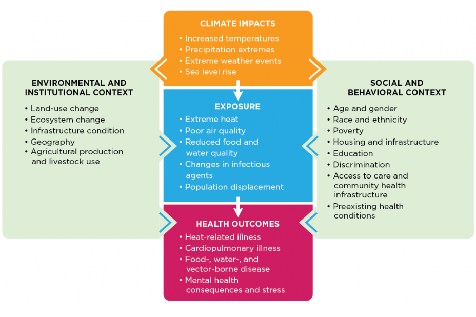 -
Heat-Related Deaths
Since 1979, more than 9,000 Americans were reported to have died as a direct result of heat-related illnesses such as heat stroke. The annual death rate is higher when accounting for deaths in which heat was reported as a contributing factor. Considerable year-to-year variability and certain limitations of the underlying data for this indicator make it difficult to determine whether the United States has experienced long-term trends in the number of deaths classified as “heat-related.”
-
Heat-Related Illnesses
From 2001 to 2010, a total of about 28,000 heat-related hospitalizations were recorded across 20 states. Annual heat-related hospitalization rates ranged from fewer than one case per 100,000 people in some states to nearly four cases per 100,000 in others. People aged 65+ accounted for more heat-related hospitalizations than any other age group, and males were hospitalized for heat-related illnesses more than twice as often as females.
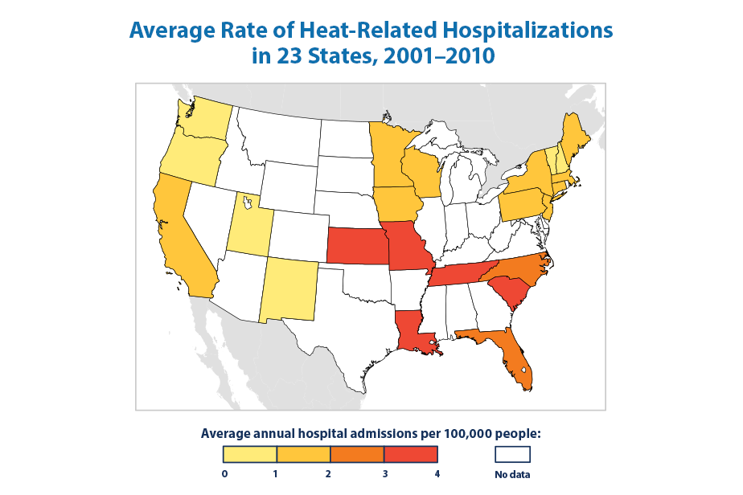Data source: CDC, 2016
-
Heating and Cooling Degree Days
Heating and cooling degree days measure the difference between outdoor temperatures and the temperatures that people find comfortable indoors. As the U.S. climate has warmed in recent years, heating degree days have decreased and cooling degree days have increased overall, suggesting that Americans need to use less energy for heating and more energy for air conditioning. In this map, “warmer” colors indicate an increase in temperatures, leading to less of a need to turn on the heat—that is, fewer heating degree days. “Cooler” colors indicate the opposite.
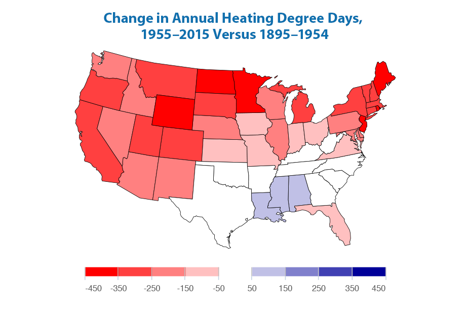Data source: NOAA, 2016
-
Lyme Disease
Lyme disease is a bacterial illness spread by ticks that bite humans. Tick habitat and populations are influenced by many factors, including climate. Nationwide, the rate of reported cases of Lyme disease has approximately doubled since 1991. Lyme disease is most common in the Northeast and the upper Midwest, where some states now report 50 to 100 more cases of Lyme disease per 100,000 people than they did in 1991.
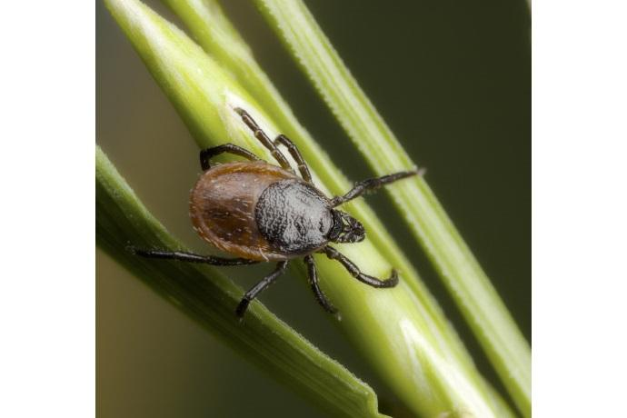 -
West Nile Virus
West Nile virus is spread by mosquitoes, whose habitat and populations are influenced by temperature and water availability, among other factors. The incidence of West Nile virus neuroinvasive disease in the United States has varied widely from year to year and among geographic regions since tracking began in 2002. No obvious long-term trend can be detected using available data.
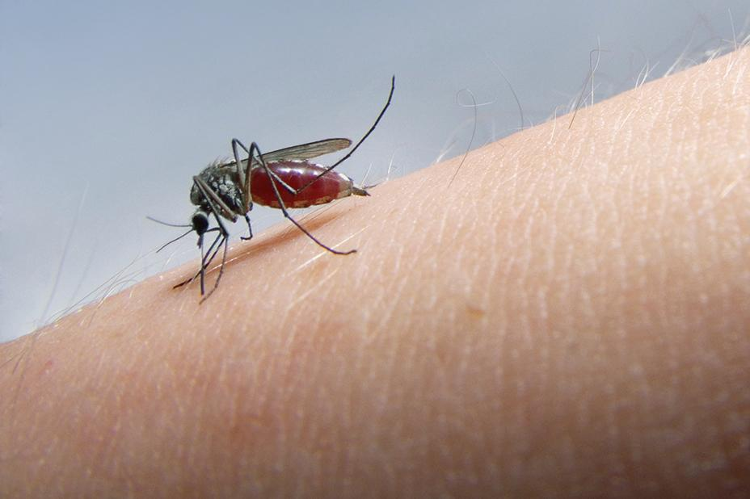 -
Length of Growing Season
The average length of the growing season for crops in the contiguous 48 states has increased by nearly two weeks since the beginning of the 20th century. A particularly large and steady increase has occurred over the last 30 years. The observed changes reflect earlier spring warming as well as later arrival of fall frosts.
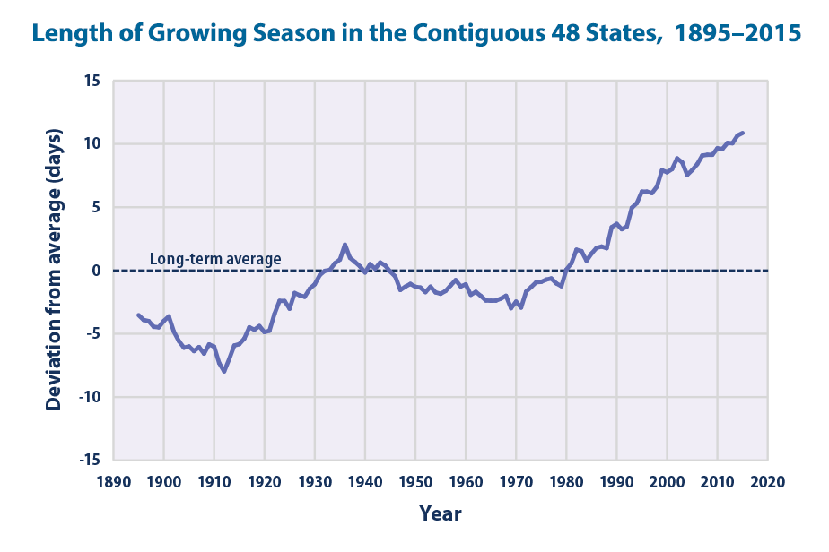Data source: Kunkel, 2016
-
Ragweed Pollen Season
Warmer temperatures and later fall frosts allow ragweed plants to produce pollen later into the year, potentially prolonging the allergy season for millions of people. The length of ragweed pollen season has increased at 10 out of 11 locations studied in the central United States and Canada since 1995. The change becomes more pronounced from south to north.
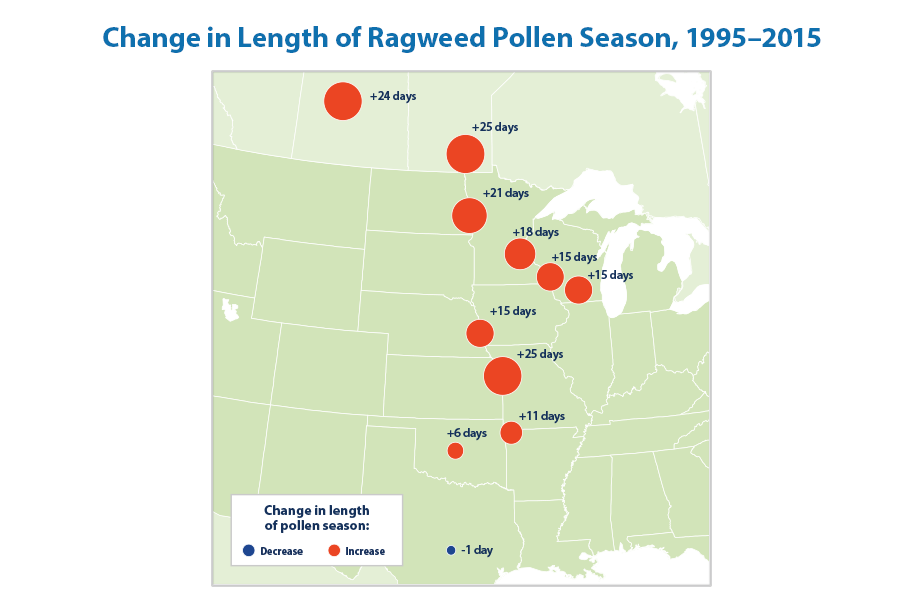Data source: Ziska et al., 2016
-
Wildfires
Since 1983, the United States has had an average of 72,000 recorded wildfires per year. Of the 10 years with the largest acreage burned, nine have occurred since 2000, with many of the largest increases occurring in western states. The proportion of burned land suffering severe damage each year has ranged from 5 to 21 percent.
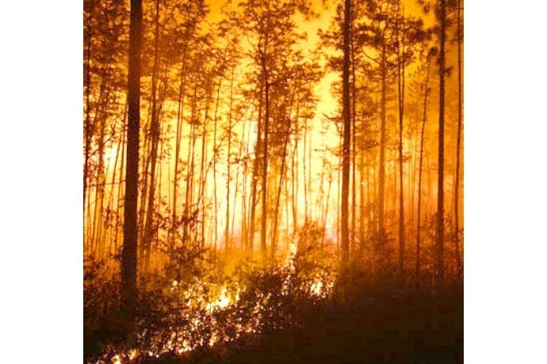 -
Streamflow
Changes in temperature, precipitation, snowpack, and glaciers can affect the rate of streamflow and the timing of peak flow. Over the last 75 years, minimum, maximum, and average flows have changed in many parts of the country—some higher, some lower. Most of the rivers and streams measured show peak winter-spring runoff happening at least five days earlier than it did in the mid-20th century.
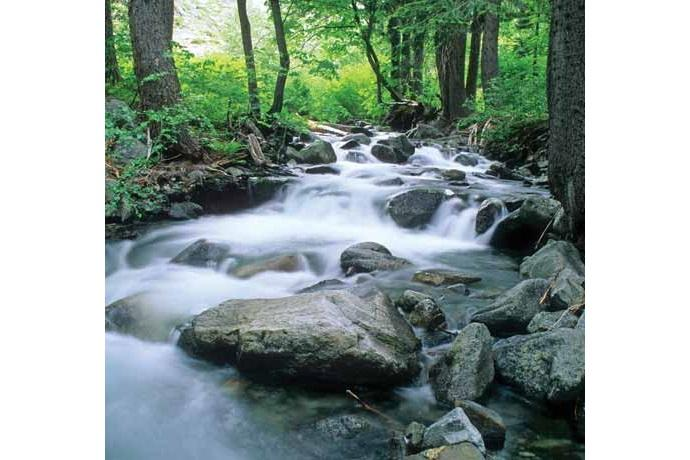 -
Stream Temperature
Stream temperatures have risen throughout the Chesapeake Bay region. From 1960 through 2014, water temperature increased at 79 percent of the stream sites measured in the region. Temperature has risen by an average of 1.2°F across all sites and 2.2°F at the sites where trends were statistically significant.
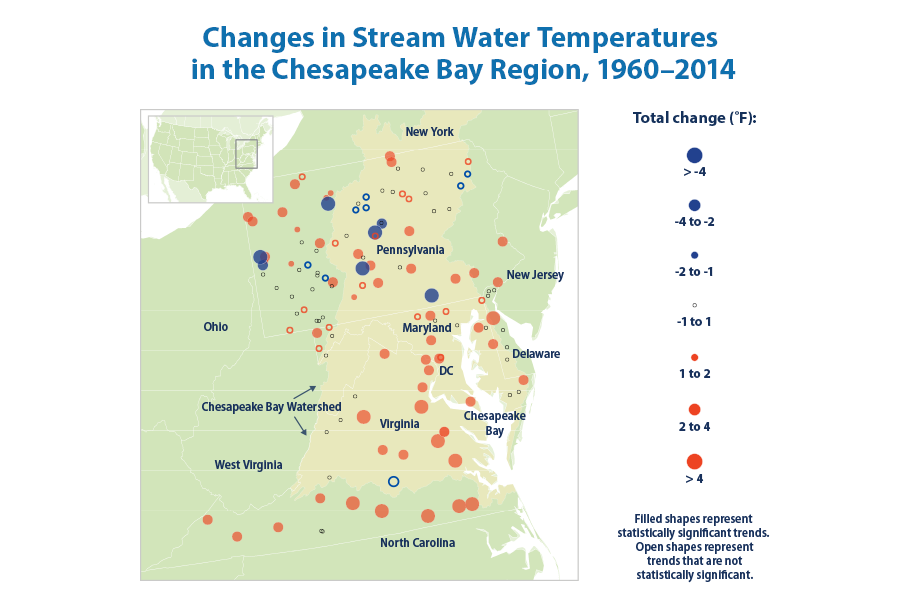Data source: Jastram and Rice, 2015
-
Great Lakes Water Levels and Temperatures
Water levels in most of the Great Lakes have declined in the last few decades. However, the most recent levels are all within the range of historical variation. Water levels in lakes are influenced by water temperature, which affects evaporation rates and ice formation. Since 1995, average surface water temperatures have increased slightly for each of the Great Lakes.
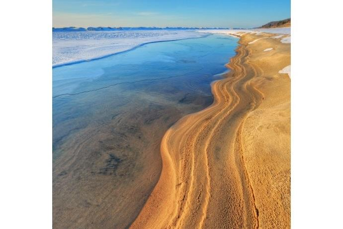 -
Bird Wintering Ranges
The migration patterns and geographic ranges of some birds have shifted due to changes in temperature or other environmental conditions. Long-term studies have found that bird species in North America have shifted their wintering grounds northward by an average of more than 40 miles since 1966, with several species shifting by hundreds of miles.
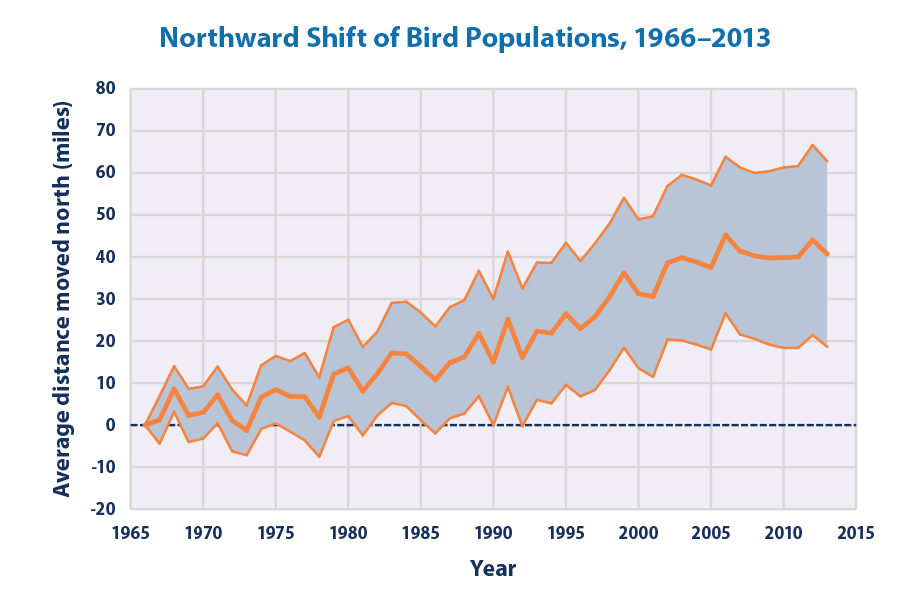Data source: National Audubon Society, 2014
-
Marine Species Distribution
In conjunction with warming ocean waters, the average center of biomass for 105 marine fish and invertebrate species along U.S. coasts shifted northward by about 10 miles between 1982 and 2015. These species also moved an average of 20 feet deeper. Shifts have occurred among several economically important fish and shellfish species. For example, American lobster, red hake, and black sea bass in the Northeast have moved northward by an average of 119 miles.
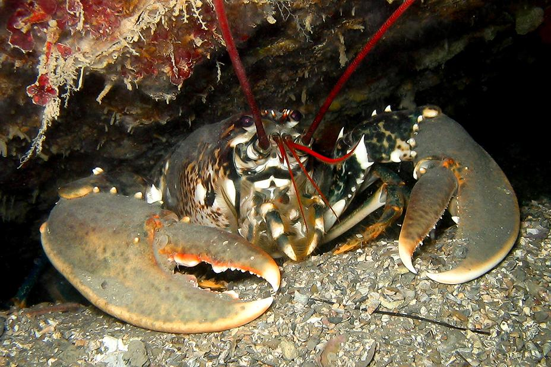 -
Leaf and Bloom Dates
Leaf growth and flower blooms are examples of natural events whose timing can be influenced by climate change. Observations of lilacs and honeysuckles in the contiguous 48 states suggest that first leaf dates and bloom dates show a great deal of year-to-year variability. Leaf and bloom events are generally happening earlier throughout the North and West but later in much of the South.
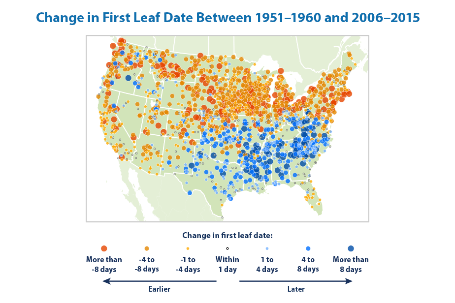Data source: Schwartz, 2016
-
More Information
Visit EPA’s climate change indicators website (www.epa.gov/climate-indicators) to see all 37 indicators, read the full report, download graphs and maps from the report, and access supporting technical documentation.
Visit EPA’s broader climate change website (www.epa.gov/climatechange) to learn more about the impacts of climate change and the steps that society can take to adapt.
Contact Us to ask a question, provide feedback, or report a problem.